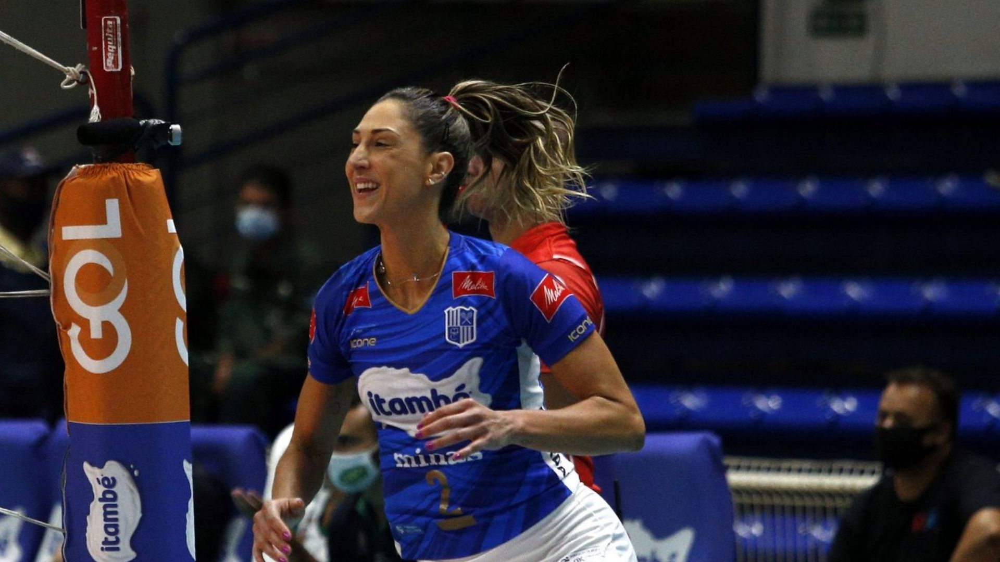
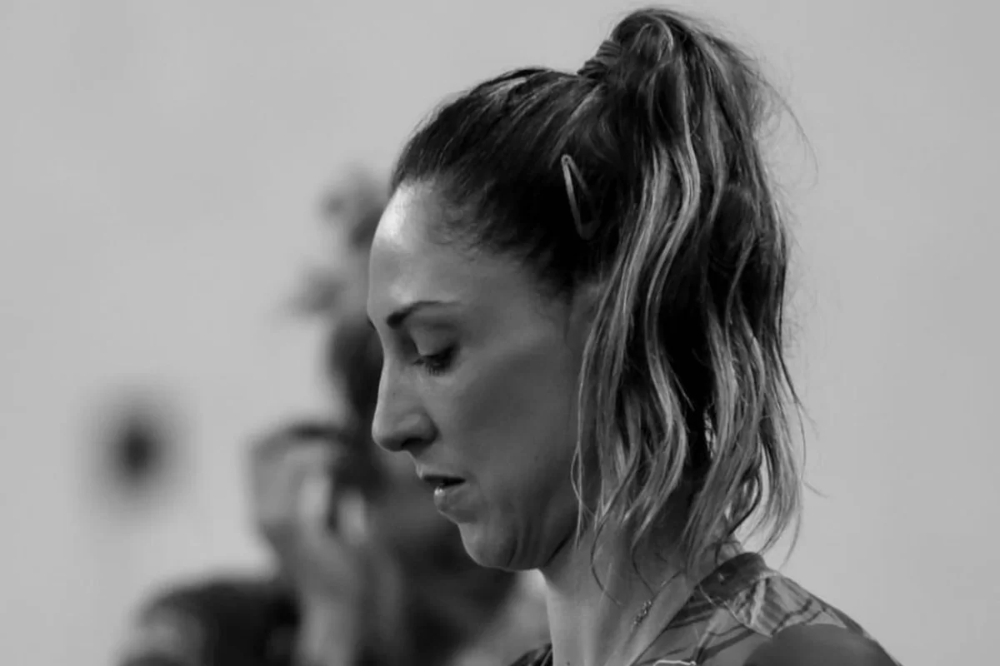

Central do Minas, Carol Gattaz, lesionou joelho e está fora da temporada
Carol Gutters se aposentou da Superliga nesta temporada. A seleção mineira e feminina de vôlei do Brasil sofreu uma ruptura do ligamento cruzado anterior do joelho direito, diagnosticada por uma ressonância magnética nesta segunda-feira. O capitão mineiro machucou o joelho após cair na última sexta-feira, durante a derrota do time para o Cesc Flamengo. O Minas confirmou a lesão e informou que Carol passará por uma cirurgia nos próximos dias. O tempo estimado de recuperação é de 6 a 9 meses. Gattaz, que tem 41 anos, tendo se classificado apenas pela primeira vez para as Olimpíadas de Tóquio, ela não jogou pela Federação Internacional no ano passado, mas voltou ao Mundial quando o técnico José Roberto Guimarães não pôde mais contar com Diana, que passou por uma cirurgia.
Ela era esperada para permanecer na seleção nacional em 2023, quando a temporada internacional culmina nos jogos pré- olímpicos em setembro, com o Brasil caindo em um grupo difícil. São duas vagas por grupo. A seleção tem uma central indiscutivelmente titular, Carol, e a tendência é Diana ter mais espaço este ano, depois de ótima temporada pelo Barueri de Zé Roberto. Julia Kudiess, que jogou o Mundial, é reserva de Gattaz e Thaisa no Minas, e só deve ter espaço agora, com a lesão da veterana. Thaisa está aposentada da seleção desde 2021, mas sempre existe a expectativa de que ela, aos 35 anos, mude de ideia.
.Carol diz:

"Assim que sai do jogo, eu me sentia bem e confiante de que a lesão no meu joelho não tinha sido tão grave. Mas, infelizmente, quando fiz a ressonância, deu o que menos esperava, e o que eu mais temia. Ruptura total do LCA"
"Assim que sai do jogo, eu me sentia bem e confiante de que a lesão no meu joelho não tinha sido tão grave. Mas, infelizmente, quando fiz a ressonância, deu o que menos esperava, e o que eu mais temia. Ruptura total do LCA"